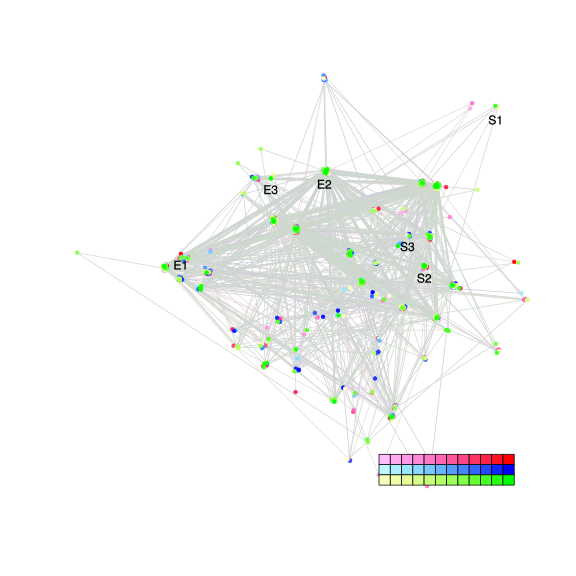
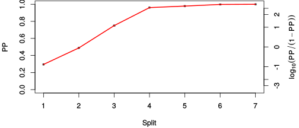
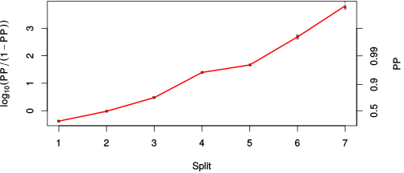

| chain # | burnin | subsample | Iterations (remaining) | command line | subdirectory | directory |
|---|---|---|---|---|---|---|
| 1 | 10000 | 1 | 90000 | /usr/local/bali-phy-3.0-beta2/bin/bali-phy E6_AA_red3_all4Manatees_BetaGamma.fas -s 78221 -n E6_red3_all4Manatees_BetaGamma_c1 | E6_red3_all4Manatees_BetaGamma_c1-1 | /home/willemse/data/trees/BaliPhy/E6 |
| 2 | 10000 | 1 | 90000 | /usr/local/bali-phy-3.0-beta2/bin/bali-phy E6_AA_red3_all4Manatees_BetaGamma.fas -s 25639 -n E6_red3_all4Manatees_BetaGamma_c2 | E6_red3_all4Manatees_BetaGamma_c2-1 | /home/willemse/data/trees/BaliPhy/E6 |
| 3 | 10000 | 1 | 90000 | /usr/local/bali-phy-3.0-beta2/bin/bali-phy E6_AA_red3_all4Manatees_BetaGamma.fas -s 46653 -n E6_red3_all4Manatees_BetaGamma_c3 | E6_red3_all4Manatees_BetaGamma_c3-1 | /home/willemse/data/trees/BaliPhy/E6 |
| P(data|M) = -3549.664 +- 0.109 | Complete sample: 515 topologies | 95% Bayesian credible interval: 77 topologies |
Phylogeny Distribution

| Partition support: Summary |
| Partition support graph: SVG |
{kind=link}
| 50% consensus | Newick (+PP) | SVG | |||||
| 66% consensus | Newick (+PP) | SVG | |||||
| 80% consensus | Newick (+PP) | SVG | |||||
| 90% consensus | Newick (+PP) | SVG | |||||
| 95% consensus | Newick (+PP) | SVG | |||||
| 99% consensus | Newick (+PP) | SVG | |||||
| 100% consensus | Newick (+PP) | SVG | |||||
| MAP | Newick (+PP) | SVG | |||||
| greedy | Newick (+PP) | SVG |
{kind=link}
{kind=link}
{kind=link}
{kind=link}
{kind=link}
{kind=link}
{kind=link}
{kind=link}
Alignment Distribution
Partition 1
| Diff | Min. %identity | # Sites | Constant | Informative | ||||
|---|---|---|---|---|---|---|---|---|
| Initial | FASTA | HTML | Diff | 2.88% | 174 | 1 (0.575%) | 128 (73.6%) | |
| Best (WPD) | FASTA | HTML | AU | 15.8% | 243 | 11 (4.53%) | 107 (44%) |
Mixing
{kind=link}
{kind=link}
| burnin (scalar) | ESS (scalar) | ESS (partition) | ASDSF | MSDSF | PSRF-CI80% | PSRF-RCF |
|---|---|---|---|---|---|---|
| 692 | 1483 | 33827.157 | 0.001 | 0.003 | 1.001 | 1.009 |
Projection of RF distances for the first 3 chains3D | Variation of split PPs across chains |
Scalar variables
| Statistic | Median | 95% BCI | ACT | ESS | burnin | PSRF-CI80% | PSRF-RCF |
|---|---|---|---|---|---|---|---|
| prior | -147.1 | (-171.5, -127.2) | 182.1 | 1483 | 628 | 1.001 | 1.004 |
| prior_A1 | -138 | (-158.7, -123.6) | 160.2 | 1685 | 376 | 1 | 1.004 |
| likelihood | -3539 | (-3551, -3527) | 72.68 | 3715 | 122 | 0.9998 | 1 |
| logp | -3686 | (-3710, -3666) | 102.8 | 2627 | 692 | 0.9997 | 1.002 |
| Heat.beta | 1 | ||||||
| Scale1 | 6.438 | (3.526, 10.32) | 1 | 270003 | 131 | 0.9998 | 1 |
| S1.F.pi.A | 0.0552 | (0.04192, 0.06948) | 7.673 | 35187 | 104 | 0.9997 | 1.001 |
| S1.F.pi.R | 0.0686 | (0.05302, 0.085) | 7.762 | 34784 | 413 | 1 | 1.001 |
| S1.F.pi.N | 0.03334 | (0.0234, 0.04426) | 8.54 | 31618 | 243 | 1 | 0.9979 |
| S1.F.pi.D | 0.05183 | (0.03781, 0.0667) | 8.05 | 33540 | 357 | 1 | 0.9964 |
| S1.F.pi.C | 0.07138 | (0.0527, 0.09118) | 8.053 | 33528 | 514 | 0.9998 | 0.9942 |
| S1.F.pi.Q | 0.03737 | (0.02728, 0.04831) | 7.861 | 34348 | 430 | 0.9997 | 1.002 |
| S1.F.pi.E | 0.05172 | (0.03894, 0.0656) | 8.098 | 33341 | 314 | 1 | 1.004 |
| S1.F.pi.G | 0.05733 | (0.04117, 0.0755) | 8.256 | 32705 | 197 | 1 | 1.009 |
| S1.F.pi.H | 0.02966 | (0.01979, 0.04064) | 8.254 | 32712 | 425 | 0.9998 | 1.005 |
| S1.F.pi.I | 0.05149 | (0.03901, 0.06506) | 8.243 | 32756 | 191 | 0.9997 | 0.9989 |
| S1.F.pi.L | 0.128 | (0.1062, 0.1514) | 7.692 | 35101 | 139 | 0.9998 | 0.9981 |
| S1.F.pi.K | 0.04242 | (0.03108, 0.05465) | 8.238 | 32776 | 310 | 1 | 0.9938 |
| S1.F.pi.M | 0.01036 | (0.005122, 0.01648) | 7.991 | 33789 | 419 | 0.9997 | 1.001 |
| S1.F.pi.F | 0.06186 | (0.04668, 0.07849) | 8.224 | 32832 | 279 | 1 | 1 |
| S1.F.pi.P | 0.02938 | (0.01828, 0.04183) | 7.938 | 34013 | 577 | 0.9999 | 0.9987 |
| S1.F.pi.S | 0.04448 | (0.03298, 0.05701) | 7.701 | 35061 | 359 | 0.9999 | 0.9969 |
| S1.F.pi.T | 0.04843 | (0.03573, 0.06188) | 7.599 | 35532 | 291 | 1 | 1.002 |
| S1.F.pi.W | 0.02106 | (0.01213, 0.03135) | 8.003 | 33737 | 594 | 0.9997 | 1 |
| S1.F.pi.Y | 0.04427 | (0.03172, 0.0575) | 7.641 | 35334 | 457 | 1 | 0.9965 |
| S1.F.pi.V | 0.05589 | (0.04248, 0.07037) | 8.129 | 33215 | 257 | 1 | 1 |
| I1.RS07.meanIndelLengthMinus1 | 8.325 | (4.118, 14.55) | 2.998 | 90075 | 205 | 1 | 0.9998 |
| I1.RS07.logLambda | -4.967 | (-5.534, -4.434) | 5.238 | 51549 | 191 | 1 | 0.9992 |
| |A1| | 241 | (235, 263) | 31.12 | 8676 | 285 | 0.9623 | 1.001 |
| #indels1 | 15 | (14, 18) | 130.1 | 2075 | 376 | 0.6667 | 1.004 |
| |indels1| | 120 | (106, 149) | 4.038 | 66866 | 222 | 0.9457 | 1.002 |
| #substs1 | 677 | (657, 684) | 38.28 | 7052 | 406 | 0.96 | 1.002 |
| Scale1*|T| | 8.346 | (7.605, 9.145) | 2.209 | 122245 | 103 | 1 | 1.001 |
| |A| | 241 | (235, 263) | 31.12 | 8676 | 285 | 0.9623 | 1.001 |
| #indels | 15 | (14, 18) | 130.1 | 2075 | 376 | 0.6667 | 1.004 |
| |indels| | 120 | (106, 149) | 4.038 | 66866 | 222 | 0.9457 | 1.002 |
| #substs | 677 | (657, 684) | 38.28 | 7052 | 406 | 0.96 | 1.002 |
| |T| | 1.297 | (0.7038, 2.036) | 1 | 270003 | 119 | 0.9999 | 1 |